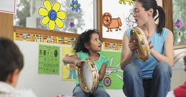
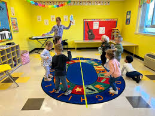

Introduction and Importance
Movement and music reflect the inner state of a person, as this plays a major role in early childhood
education because they provide children with opportunities for self-expression, creativity, and exploration.
Performing these activities improves social connection, body consciousness, rhythm, physical coordination,
and emotional expressiveness (Niland, 2015).
Importance
- Music teaches emotions, narrative, and science and math principles while improving listening comprehension, memory, and cultural awareness.
- Through movement, children can explore their bodies and the world, gaining confidence, creativity, and imagination as well as improving their motor skills, balance, coordination, and spatial awareness (Boyd et al., 2015).
- Together, these activities foster a rich learning environment, fostering a lifelong love for learning and self-expression.
Theories and Perspectives
Early childhood education benefits greatly from the movement and music curriculum, which promotes creativity
via a variety of theoretical frameworks, including:
-
By teaching children via music and movement, Parten's Stages of Play highlights the shift from independent
to cooperative play and helps them develop their social skills and creative expression through teamwork and
idea-sharing (Beloglovsky, 2015).
-
According to Smilansky, symbolic play is important for developing creativity because it enables children to
express their ideas and feelings through movement and music, enabling them to take on the roles of various
characters and situations (Kearns, 2020).
-
The Social Development Theory of Vygotsky places a strong emphasis on the value of social contact in learning,
especially in activities including dance and music. The "Zone of Proximal Development" postulates that when peers
and adults encourage children's creative thinking, they can reach greater heights (Beloglovsky, 2015).
Resources and Materials
Essential supplies for movement and music curriculum:
- Use of musical instruments, scarves (e.g., tambourines, maracas, xylophones), ribbons, and movement props.
- Use of digital technologies like tablets with music apps, interactive whiteboards, and audio equipment.
- Creation of designated music and movement areas for dancing and performing.
- Incorporation of diverse music genres and cultural influences enriches the learning experience and exposes children to different rhythms and sounds.
Creative Learning Opportunities
| Age |
Activity |
Description |
| 0-2 years |
Sensory Music Exploration with Shakers |
Caregivers use shakers and soft instruments to introduce babies to sound and rhythm. |
| 2-3 years |
Dance Party with Scarves |
Children use colourful scarves to dance freely to different types of music, encouraging self-expression and movement exploration. |
| 3-5 years |
Creating a Movement Story |
Children collaborate to create a story that incorporates movement, using music to enhance the narrative and express emotions. |
Critical Reflection and Evaluation
In early childhood education, my love of music and movement greatly improves my teaching abilities. I think it's
important to create a creative atmosphere that lets youth freely express themselves and explore their ideas.
I can create a dynamic learning environment that encourages teamwork, critical thinking, and emotional expression
by including music and dance in the curriculum. I'm dedicated to giving children the instruments and materials
they need to express their creativity via dance, music, or rhythmic exercises. My approach is informed by my
knowledge of various theories of creativity, which helps me to establish welcoming and encouraging spaces where
every child feels capable and appreciated. By encouraging youngsters to take chances in their artistic pursuits,
I hope to build resilience and a growth attitude in them.

